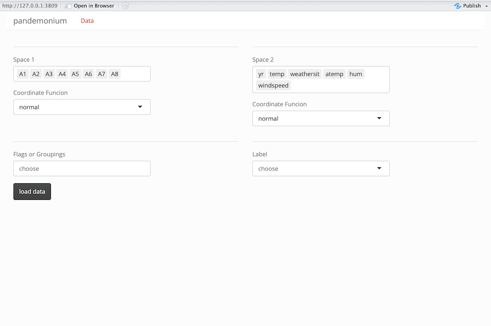

Data Input for pandemonium
datainput.RmdInputs
To launch the app, the user needs to provide a data frame with the observations.
pandemonium(df = Bikes$df)Variables can be sorted into the clustering space (space1) and the linked space (space2) once loaded into the app in the data screen. Variables can be added or removed from each space with the drop down selector that appears by clicking on the box.

Alternatively, the data can be passed in as two separate arrays with
the clustering variables in df = space1 and the linked
variables in space2 = space2. This will select them in
space 1 and 2 in the data screen when loading the app. This can be done
like this:
pandemonium(df = Bikes$space1, space2 = Bikes$space2)Optional inputs
A complete input for pandemonium() includes optional
data and function inputs. All inputs are shown in the following
call.
pandemonium(df, cov = NULL, is.inv = FALSE, exp = NULL, space2 = NULL, space2.cov = NULL,
space2.exp = NULL, group = NULL, label = NULL, user_dist = NULL,
dimReduction = list(tSNE = tSNE, umap = umap), getCoords = list(normal = normCoords), getScore = NULL)Data Inputs
| Input | Type | Applies to | Default | Purpose |
|---|---|---|---|---|
label |
vector, length = n | points | row index | Shown in tours/dim. reduction hover text |
group |
vector / data.frame | points | none | Define user-specified groups; categorical or numeric |
cov,space2.cov* |
matrix | group/space | computed via stats::cov
|
Used in getScores, getCoords, anomaly
tour |
exp,space2.exp
|
data frame with column value length of number of
variables in space |
variables | mean vector | Reference point in space used in getCoords |
user_dists |
matrix | space1 | ignored | Advanced: overrides getDists output |
* cov can also be the inverse covariance matrix by
setting is.Inv=TRUE
Function inputs
| Input | Type | Use |
|---|---|---|
getCoords |
named list of coordinate functions | computes coordinates for distance calculations |
getScores |
Function that returns a named list | computes scores and/or bins for use in plotting |
See
vignette("get-scores")andvignette("get-coords")for more information on these inputs.
The data page
Once a call to pandemonium() is made the app will load
into the data page which looks like below.
On this page, variables can be removed from either space or even moved between them. A Coordinate function can be selected from the input functions. There are also two additional inputs for groupings or flags as well as a label.
Groupings
In this input you can select variables passed to pandemonium in the
group= input, as well as any variables removed from space 1
or space 2 by deleting them in their inputs. Variables that were
automatically removed from the two spaces for being non-numeric can also
be selected. This is designed for categorical data so that it can be
compared to clustering results. The selected variable(s) will be
converted into a single factor with interaction().